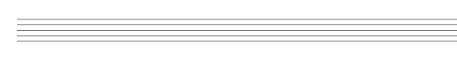

2.2. The Instrument element
An Instrument is a collection of one or more staves (i.e., grand-staff) describing the music.
instrument ::= (instrument [instrId] [name] [abbrev] [staves] [staff*] [infoMIDI]musicData) instrId ::= ID name ::= (name string) abbrev ::= (abbrev string)
Instruments have usually a name. Optionally, also an abbreviated name; in these cases the name will be used at the start of the first system, and the abbreviation for succeeding systems.
Instruments should have an ID but it is not required if the parts element is not defined in the score element:
(instrument P1 (name "Flute")(musicData ... )) //instrument ID = P1
The musical content is described by the musicData element (see next chapter The musicData element). It is the only mandatory element and can be empty:
(score (vers 2.0)
(instrument (musicData))
)
The previous LDP score is the minimum content and will render an empty staff:
2.2.1. Number of staves
By default, an instrument will have only one staff. This can be modified using the staves element, which defines the number of staves to use:
staves ::= (staves num_staves)
num_staves ::= integer 1 .. n
For instance, for a piano grand-staff, you will have to define (staves 2)
(instrument (name "Piano")(staves 2)(musicData ... ))
By default all staves are 5-lines, standard size. To have a different layout the element staff is used. It describes the type and layout for one staff. You have to use as many staff elements as staves you would like to change:
staff ::= (staffnum_staff[staffType] [staffLines] [staffSpacing]
The staffType element is used to indicate different types of staves. Default is ‘regular’. An ‘alternate’ staff indicates one that shares the same musical data as the prior staff, but displayed differently (e.g., treble and bass clef, standard notation and tab).
The staffLines element specifies the number of lines. Default is 5-line staff.
The staffSpacing element indicates the distance between two lines (in logical units, cents of a millimeter), measured from the center of the lines. Default value is 1.8 millimeters (180 LUnits), so the resulting staff height is of 7.2 mm.
The staffDistance element is the vertical distance from the bottom line of the previous staff in the system (in logical units, cents of a millimeter). This value is ignored for the first staff in a system. Default value is 10 millimeters (1000 LUnits).
The lineThickness element is the thickness of each staff line (in logical units, cents of millimeter). Default value is 0.15 millimeters (15 LUnits).
For example:
(score (vers 2.0)
(instrument (name "Flute")
(staff 1 (staffType regular)(staffLines 5)(staffSpacing 120.00)
(staffDistance 1000.00)(lineThickness 10.00)
)
(musicData)
)
(instrument (name "Piano")(staves 2)(musicData))
)
will be rendered as:

2.2.2. MIDI information
The infoMIDI element is used for assigning a MIDI channel and a MIDI instrument for playback. By default, if no MIDI information is provided, the instrument will be assigned to channel 0, instrument 0 (grand piano).
infoMIDI ::= (infoMIDInum_instr[num_channel]) num_instr ::= integer 0 .. 255 num_channel ::= integer 0 .. 15